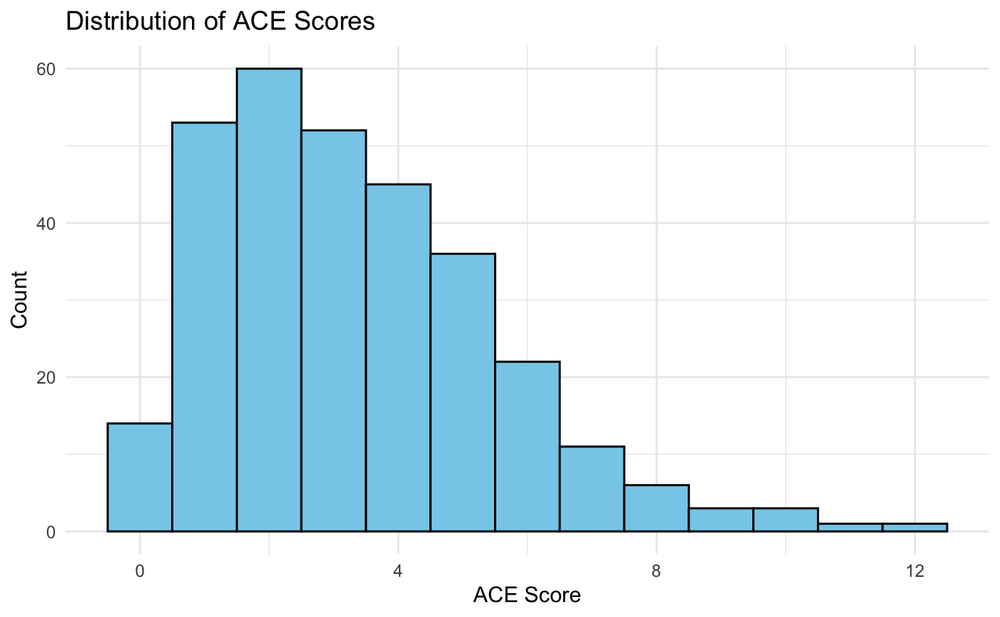
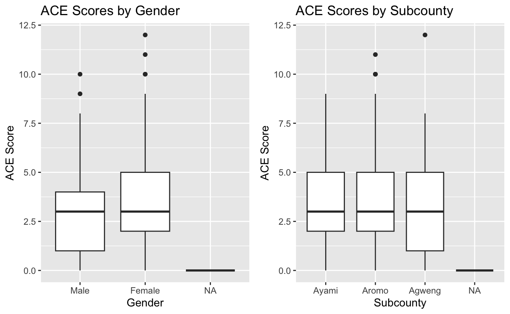
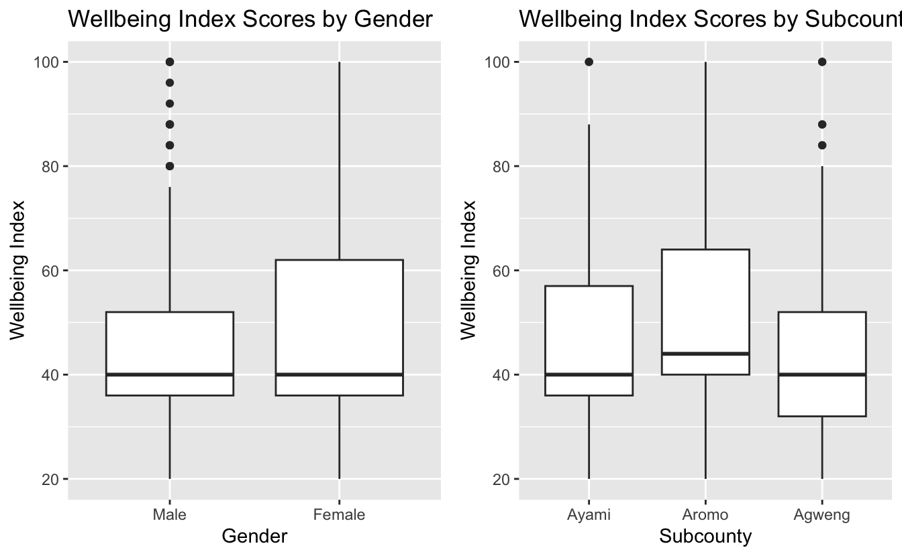

According to the World Health Organization (WHO), mental health disorders currently affect more than one billion people, including one in seven adolescents. However, despite the growing health and economic burden, governments spend only around 2% of their health budgets on these disorders and people with mental health conditions often experience severe human rights violations, discrimination, and stigma.
The dataset used in this analysis originates from a community health assessment conducted by the University of Southern California’s Global Research Implementation and Training Lab in Lira District, Eastern Uganda.
In response to the call for greater attention to mental health challenges in low-income and post-conflict communities, a community-based participatory research (CBPR) study was carried out in Lira District, Uganda in the Spring of 2022. Data was collected through an adolescent questionnaire assessing general demographics, physical health status, diet, substance use, violence and risky behaviors, mental health knowledge, and behaviors, Adverse Childhood Experiences Score (ACE-IQ), and WHO-5 Wellbeing Index Scores.
The main research question explored through this dataset is, using measures including ACE-IQ and WHO Wellbeing Index scores as predictors, what are current mental health outcomes among adolescents in Lira District, specifically looking at how might factors, such as gender and participant subcounty affect these outcomes among this population.
| Overall (N=307) |
|
|---|---|
| Subcounty | |
| Ayami | 72 (23.5%) |
| Aromo | 141 (45.9%) |
| Agweng | 93 (30.3%) |
| Missing | 1 (0.3%) |
| Age Category | |
| 14-15 | 189 (61.6%) |
| 16-17 | 117 (38.1%) |
| Missing | 1 (0.3%) |
| Gender | |
| Male | 139 (45.3%) |
| Female | 167 (54.4%) |
| Missing | 1 (0.3%) |
| Religion | |
| Anglican | 104 (33.9%) |
| Roman Catholic | 113 (36.8%) |
| Muslim | 3 (1.0%) |
| Pentecostal | 84 (27.4%) |
| Jewish | 2 (0.7%) |
| Missing | 1 (0.3%) |
| People in Home | |
| Mother | 84 (27.4%) |
| Father | 130 (42.3%) |
| Brother/Sister | 59 (19.2%) |
| Grandparent | 33 (10.7%) |
| Missing | 1 (0.3%) |
| Caretaker | |
| I sleep alone | 197 (64.2%) |
| 2 people | 96 (31.3%) |
| 3 people | 3 (1.0%) |
| 4 people | 9 (2.9%) |
| 5 or more people | 1 (0.3%) |
| Missing | 1 (0.3%) |
| School | |
| Enrolled | 268 (87.3%) |
| Not enrolled | 38 (12.4%) |
| Missing | 1 (0.3%) |
This table shows participant demographics. Amongst the surveyed youth, 45.42% were male and 54.58% were female, the majority of which (61.8%) were 14 and 15 years old and enrolled in school (87.5%).

Adverse Childhood Experience (ACE-IQ) scores for adolescents ranged from 0-11, with an average score of 3. Out of 13.41% of adolescents had ACE-IQ scores of 4 or higher. WHO Wellbeing Index scores ranged from 20-100, with an average score of 48.38.

In all 3 sub-counties, females scored higher than males, with females in Agweng scoring the highest on the ACE-IQ survey tool indicating having experienced the most adverse childhood experiences.

Males still scored higher in the wellbeing index. Adolescents from Agweng had the lowest scores.
From the scatterplot of ACE scores and Wellbeing index scores they seem to have a moderate inverse relationship, higher ACE scores indicate lower Wellbeing scores.
Preliminary study results indicate that adolescents surveyed throughout Lira District in northern Uganda exhibited poor mental health status. Participant gender and sub-county played significant roles in mental health outcomes. Ultimately, results show that poor mental health outcomes disproportionately impact the weakest and often most marginalized populations in society; namely poor, rural, women and girls. The adolescents surveyed have no living memory of the war, however, they do have memories of the immediate aftermath, have grown up in communities struggling to rebuild post-conflict, and have been raised by parents who most likely suffered directly. This study provides useful insight into the impact of the conflict on the health and wellness of the subsequent generation of youth in the region. Mental health response by politically informed analyses and interventions should be a priority focus for building positive adolescent health outcomes.
For further analysis, view the full study report here: [Download the PDF Report]